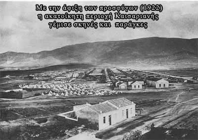

Η Καισαριανή πριν το 1922

Η περιοχή της Καισαριανής ήταν βραχώδης, με αρκετή βλάστηση στις παρυφές του Υμηττού και σχεδόν ακατοίκητη.
Σύμφωνα με την απογραφή του 1920 μόλις 11 άτομα ζούσαν στην περιοχή, όχι όμως μόνιμα, και λόγω της μορφολογίας του
εδάφους ασχολούνταν με την κτηνοτροφία. Το νοσοκομείο Συγγρού, οι στρατιωτικές εγκαταστάσεις υλικού πολέμου και οι στάβλοι της
ανακτορικής φρουράς ολοκλήρωναν την εικόνα της περιοχής. Αυτή η περιοχή έμελλε να φιλοξενήσει τους πρόσφυγες. Επειδή όμως ήταν
έξω από την κατοικημένη περιοχή της Αθήνας, η υποδομή για την εγκατάσταση των προσφύγων ήταν ανύπαρκτη.